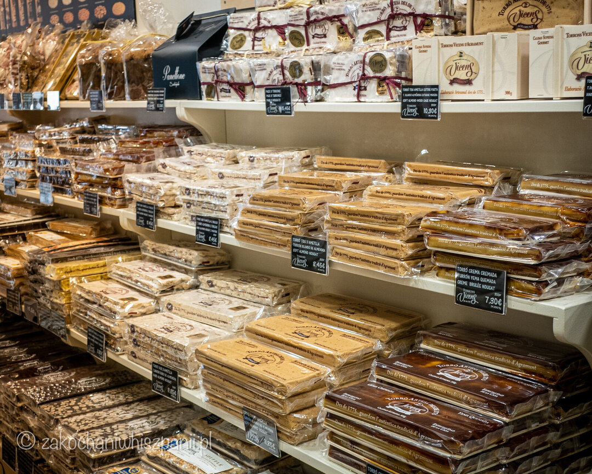
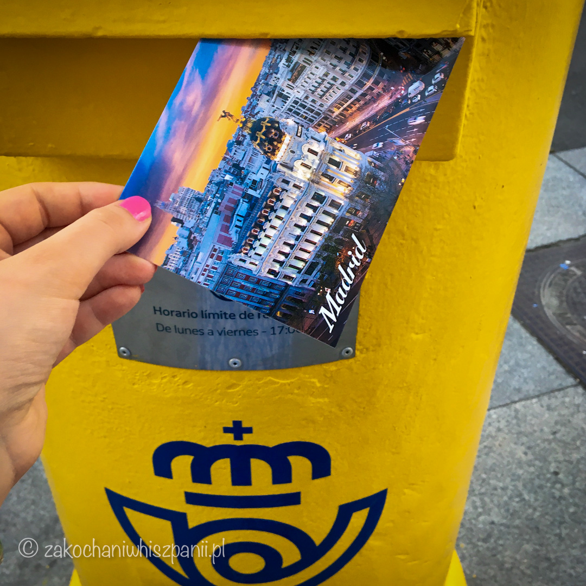
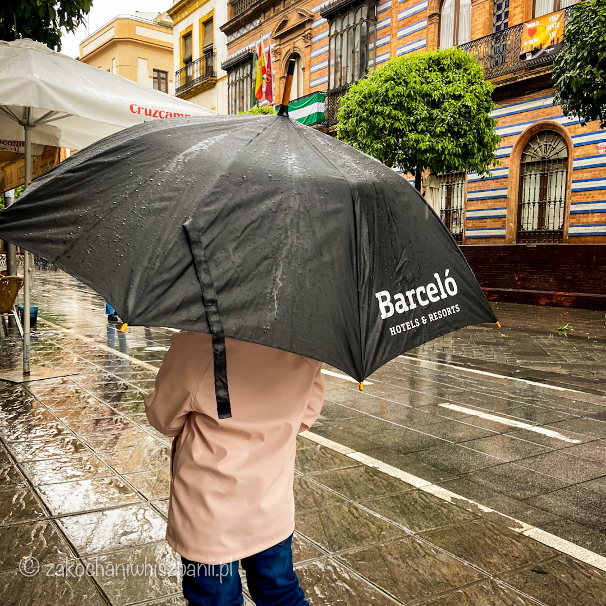

Jak uratować deszczowy dzień w Hiszpanii?
Co robić, gdzie pójść gdy pada deszcz w trakcie urlopu?
Wybierasz się na urlop do Hiszpanii? Nastawiasz się na słoneczną pogodę? Jesteś zaskoczony/a, że akurat w trakcie Twojego pobytu pada deszcz. Co robić, by nie stracić cennych chwil podczas wyjazdu do pięknej Hiszpanii? Taki dzień można spędzić w pokoju hotelowym. Jednak jeśli nie chcesz zostać w hotelu, możesz deszczowy dzień zacząć od naszych propozycji.
1. Idź na wystawę do muzeum
W dużych miastach jest wiele ciekawych obiektów kulturalnych, w których możesz schować się przed gorszą pogodą, np. w Sewilli polecamy Muzeum Sztuk Pięknych, w Maladze możesz zajrzeć do Muzeum Carmen Thyssen, a w Barcelonie Muzeum Picassa.
2. Zrób zakupy, kup lokalne pamiątki dla siebie i najbliższych (np. wino, turron)

Za każdym razem wracając z Hiszpanii, przywozimy ze sobą produkty kulinarne. Jeśli trafisz na porę deszczową, wykorzystaj ten czas na zakupy lokalnych pamiątek dla siebie i bliskich. W miejscowościach turystycznych polecamy sklep Vicens (sieć sklepów).
To miejsce z dobrymi hiszpańskimi słodkimi przekąskami. Kupisz tu likiery, czekolady, turron i migdały w polewie.
3. Idź na kawę np. jedną z naszego zestawienia
Podczas deszczowej pogody wejdź do baru lub kawiarni i zamów kawę np. rozgrzewającą Café carajillo czy Café bombon. Są to specyficzne hiszpańskie rodzaje kaw, które z pewnością spotkasz w menu. Więcej o rodzajach kaw przeczytaj na naszym blogu w artykule TOP 10 Kaw, których musisz spróbować będąc w Hiszpanii. Podróżujesz z dzieckiem? W Hiszpanii raczej trudno dostać kubek ciepłej herbaty, za to polecamy dla Twojej pociechy zamówić kakao Cola Cao.
4. Napisz pocztówki do rodziny/znajomych

Między łykiem kawy a kawałeczkiem deseru, możesz wypisać wcześniej kupione pocztówki. To świetny pomysł gdy podróżujesz z dziećmi :) Możesz poprosić dziecko, o to by narysowało na pocztówce np. coś związanego z wyjazdem.
Uwaga na znaczki - są dwa rodzaje, jedne z kodem QR do specjalnych zielonych skrzynek Post By.Me, standardowe trzeba wrzucać do żółtych skrzynek hiszpańskiej poczty Correos (na zdjęciu).
5. Spróbuj lokalnych przysmaków w formie tapas do tego zamów kieliszek lokalnego wina

Odwiedzasz Barcelonę i pada deszcz? Polecamy restaurację La Mar Bella, w której zjesz smaczne przegrzebki. W pobliżu, przy plaży Bogatell wejdź do restauracji Xiringuito Escribana pyszną aromatyczną paellę. W trakcie deszczowej pogody jesteś w stolicy Hiszpanii, w Madrycie możesz spróbować smacznych dań w restauracji Bloom. Jesteś w Sewilli? Spróbuj wina z pomarańczy, możesz odwiedzić jedną z naszych ulubionych restauracji w Sewilli, Gusto.
P.S. Nie jesteś przygotowany na deszczową pogodę? Jeśli nocujesz w hotelu, zapytaj na recepcji czy są dostępne parasole.

Masz inne pomysły? Podziel się z nami :)Życzymy Ci samej słonecznej pogody w Hiszpanii.
Najnowsze wpisy


Tagi